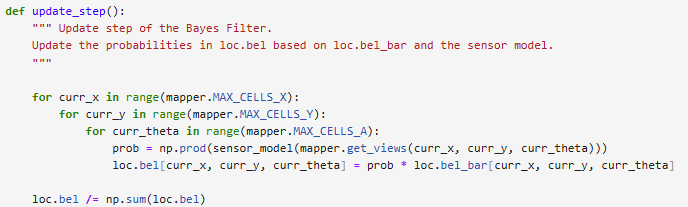

Lab 10: Localization (sim)
Lab 10 focuses on using a Python simulation to implement grid localization for a virtual robot in a 2D environment, similar to the arena used in previous labs. Before starting, I set up the simulator by installing Box2D and Pygame as instructed.
Localization is the process of estimating where a robot is in space based on the sensors and based on the initial state. Since the robot has no direct access to its true position, we use a probabilistic approach through a Bayes filter to maintain and update a belief about its location.
The Bayes filter operates in two steps: a prediction step and an update step. The prediction step estimates the robot’s new position based on control inputs. While the update step refines this prediction using sensor measurements, reducing uncertainty by incorporating environmental observations. This process allows the robot to continuously update its belief about its current pose in the environment.
The robot's pose is represented by its x and y coordinates on the ground plane, as well as its orientation angle. The continuous state space is discretized into a grid to allow Bayes filtering to approximate the robot’s belief over possible locations.
For this lab, I reviewed the Bayes filter algorithm and familiarized myself with the simulator environment. I prepared by understanding how the prediction and update steps work together to refine the robot’s localization, and how the sensor and motion models contribute to belief updates.
Tasks:
Using the Python simulator and the lab 10 notebook, I wrote the code to implement the Bayes Filter for localization.
Compute Control:
The compute control function take the current and the previous pose and then taking the difference can determine the intial rotation (delta_rot1), translatation (delta_trans), and the final rotation (detla_rot2) that essentially gives the steps of the odometry model.
Delta_rot1 is computed by taking the arctan of the position differnce, and delta_trans is the straight line distance between the two points. While delta_rot2 adjusts for the final rotation needed.
Both rotations are normalized to be within [-180°, 180°] to ensure that the angles stay consistant.
Odometry Motion Model:
For this part, I implemented the odometry motion model, which calculates the probability that the robot actually made the move we expected it to. It first uses compute_control() to get the ideal movement, which is broken down into rotation 1, translation, and rotation 2.
Each of these control steps is compared to the corresponding control input u, and the error is modeled as a Gaussian distribution centered on the expected value, with a given standard deviation. Since the steps are treated as independent, the three probabilities are multiplied together to get the final result.
This gives us P(x'|x,u), the probability that the robot reached the new pose after applying the control input.
Prediction Step:
The prediction step is the frist part of the Bayes filter, where it takes the previous odometry and uses compute_control() to calcuate the control input. Then it initalizes the new belief bel_bar to to zeros.
The function loops through every prior cell (x, y, theta) with non-negligible belief (I used a threshold of 0.0001), and for each one, it loops every possible new cell (x', y', theta').
It then converts into grid indices into real poses using the mapper, and uses the odometry motion model to get the probability of moving from the old pose to the new pose given the control input.
At the end, the bel_bar is normalized to ensure that the sum of the probabilities is 1.
Sensor Model:
For this part, I implemented sensor_model(), which calculates \( P(z|x) \), the probability of getting a certain sensor observation given the robot’s pose. The function takes in the true sensor readings at a particular pose and compares them to the expected readings based on the map.
For each measurement, it uses a Gaussian model centered at the observed distance, with a standard deviation that accounts for sensor noise. I used loc.gaussian() to compute the probability for each reading.
The final output is a probability score that shows how well the robot’s actual observations match what would be expected if it were standing at that pose.
Update Step:
The update step is the last function in the Bayes filter, which the function loops over the grid for the current state, retrieves the sensor model data using the sensor model function, which then updates the belief. The updated belief is then normalized to the sum of 1 which represents the robot estimation of the position.

Running the Simulation:
Run with Bayes filter:
Conclusion